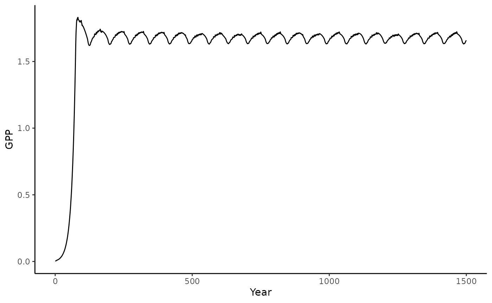
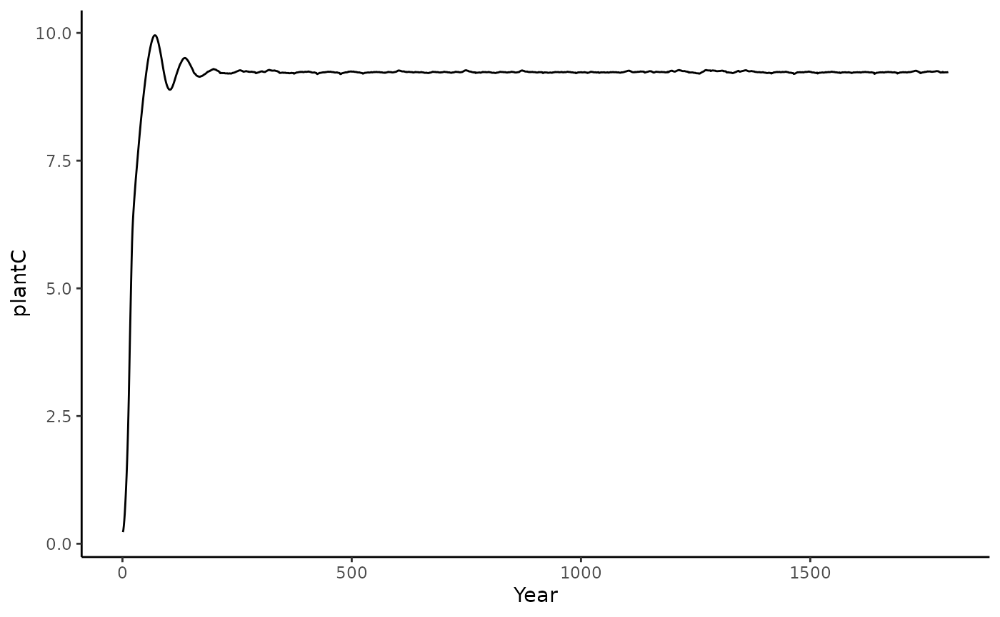
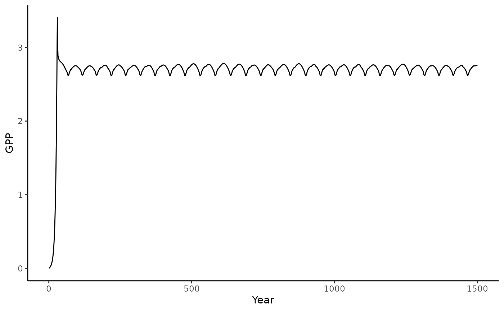
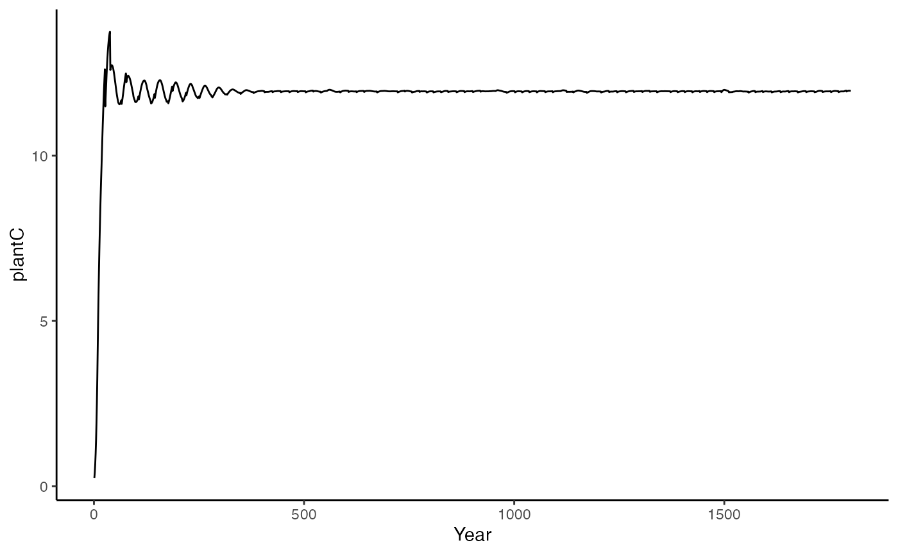

The rsofun package and framework includes two main models. The pmodel and lm3-ppa (which in part relies on pmodel compents). Here we give a short example on how to run the lm3ppa model on the included demo datasets to familiarize yourself with both the data structure and the outputs.
The package includes two demo datasets to run and validate pmodel output. These files can be directly loaded into your workspace by typing:
library(rsofun)
lm3ppa_gs_leuning_drivers
#> # A tibble: 1 × 9
#> sitename params_siml params_tile params_species params_soil init_cohort
#> <chr> <list> <list> <list> <list> <list>
#> 1 CH-Lae <tibble [1 × 12]> <tibble [1 … <tibble [16 ×… <tibble [9… <tibble [1…
#> # … with 3 more variables: init_soil <list>, forcing <list>, site_info <list>
lm3ppa_p_model_drivers
#> # A tibble: 1 × 9
#> sitename params_siml params_tile params_species params_soil init_cohort
#> <chr> <list> <list> <list> <list> <list>
#> 1 CH-Lae <tibble [1 × 12]> <tibble [1 … <tibble [16 ×… <tibble [9… <tibble [1…
#> # … with 3 more variables: init_soil <list>, forcing <list>, site_info <list>
lm3ppa_validation
#> # A tibble: 1 × 2
#> # Groups: sitename [1]
#> sitename data
#> <chr> <list>
#> 1 CH-Lae <tibble [2,920 × 3]>These are real data from the Swiss CH-Lae fluxnet site. We can use these data to run the model, together with observations of GPP we can also parameterize lm3ppa parameters.
The LM3-PPA is a cohort-based vegetation model which simulates vegetation dynamics and biogeochemical processes (Weng et al., 2015). The model is able to link photosynthesis standard models (Farquhar et al., 1980) with tree allometry. In our formulation we retain the original model structure with the standard photosynthesis formulation (i.e. “gs_leuning”) as well as an alternative “p-model” approach. Both model structures operate at different time scales, where the original input has an hourly time step our alternative p-model approach uses a daily time step. Hence, we have two different datasets as driver data (with the lm3ppa p-model input being an aggregate of the high resolution hourly data).
With all data prepared we can run the model using runread_lm3ppa_f(). This function takes the nested data structure and runs the model site by site, returning nested model output results matching the input drivers. In our case only one site will be evaluated.
df_output <- runread_lm3ppa_f(
lm3ppa_gs_leuning_drivers,
makecheck = TRUE,
parallel = FALSE
)We can now visualize the model output.
library(dplyr)
library(ggplot2)
# we only have one site so we'll unnest
# the main model output
df_output$data[[1]]$output_annual_tile %>%
ggplot() +
geom_line(aes(x = year, y = GPP)) +
theme_classic()+labs(x = "Year", y = "GPP")
df_output$data[[1]]$output_annual_tile %>%
ggplot() +
geom_line(aes(x = year, y = plantC)) +
theme_classic()+labs(x = "Year", y = "plantC")
Running the fast p-model implementation.
df_output <- runread_lm3ppa_f(
lm3ppa_p_model_drivers,
makecheck = TRUE,
parallel = FALSE
)We can now visualize the model output.
library(dplyr)
library(ggplot2)
# we only have one site so we'll unnest
# the main model output
df_output$data[[1]]$output_annual_tile %>%
ggplot() +
geom_line(aes(x = year, y = GPP)) +
theme_classic()+labs(x = "Year", y = "GPP")
df_output$data[[1]]$output_annual_tile %>%
ggplot() +
geom_line(aes(x = year, y = plantC)) +
theme_classic()+labs(x = "Year", y = "plantC")
To optimize new parameters based upon driver data and a validation dataset we must first specify an optimization strategy and settings, as well as parameter ranges.
lm3ppa_gs_leuning_drivers$params_siml[[1]]$spinup <- TRUE
lm3ppa_gs_leuning_drivers$params_siml[[1]]$spinupyears <- 10
# Mortality as DBH
settings <- list(
method = "bayesiantools",
targetvars = c("gpp"),
timescale = list(targets_obs = "y"),
sitenames = "CH-Lae",
metric = cost_rmse_lm3ppa_gsleuning,
dir_results = "./",
name = "ORG",
control = list(
sampler = "DEzs",
settings = list(
burnin = 10,
iterations = 50
)
),
par = list(
phiRL = list(lower=0.5, upper=5, init=3.5),
LAI_light = list(lower=2, upper=5, init=3.5),
tf_base = list(lower=0.5, upper=1.5, init=1),
par_mort = list(lower=0.1, upper=2, init=1))
)
pars <- calib_sofun(
drivers = lm3ppa_gs_leuning_drivers,
obs = lm3ppa_validation_2,
settings = settings
)
#>
Running DEzs-MCMC, chain 1 iteration 51 of 51 . Current logp 6.755456 6.755456 6.755456 . Please wait!
#> runMCMC terminated after 1.89seconds